Approfondimenti
Home
Cosa sono?
Proprietà fisiche
Gay Lussac
Prima Legge
Seconda Legge
Temperatura assoluta
La legge di Boyle
Le Mole e le Masse
La Legge di Avogadro
I Gas Perfetti
Mappa Concettuale
Se preferisci scaricare la mappa-clicca qui sotto:
Scarica la Mappa Concettuale (PDF) 📄
